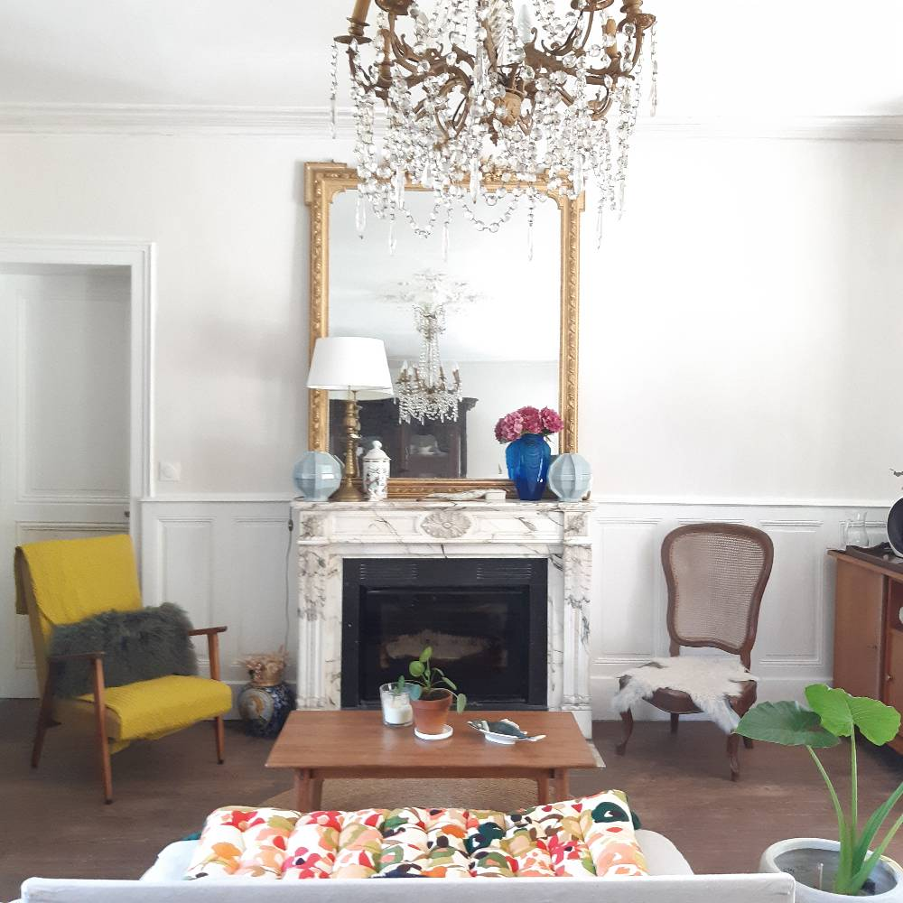

Venez goûter au calme et à l’étendue de nos belles plages de la côte Picarde, entre Somme et Seine Maritime.
A Ault, une petite ville côtière, située dans une valleuse entre Terre et mer. Laissez vos yeux chavirer devant ces paysages naturels et vertigineux. Ici, les falaises nous rendent l’horizon infini, Ici, les maisons touchent en un même temps le ciel et les flots.
Parmi elles, La Masqueville vous acceuille dans son écrin de verdure, située à 500 m de la Mer et des premières blanches falaises de Normandie.
Nous vous proposons 2 chambres, avec petit déjeuner :